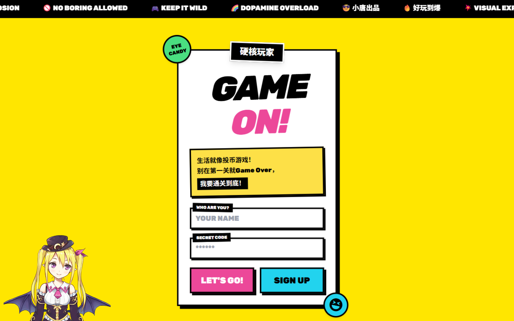

01
LLM 应用
RAG 检索增强 · LangChain · Prompt 工程 · 向量数据库（ChromaDB）· Embedding 选型与评估 · SSE 流式输出 · 大模型 API 集成
01 / 03
把大模型能力，落成能用的产品。
专注 LLM 应用开发与 AI 产品。关注检索质量、响应体验与真实场景中的可靠性，让每一次技术尝试都能变成可验证的产品价值。
每个项目都记录了从原型、实现到调优的过程。技术选择与问题解决，都可以在项目详情和 Git 历史中追溯。

基于 LangChain + ChromaDB 的 RAG 应用，支持 SSE 流式输出、多会话管理与评估集实验。通过定位嵌入兼容性问题，将 hit@1 从 69% 提升至 100%，并支持 BYOK 在线试用。

4 款小游戏组成的在线街机，包含账号体系、最高分排行榜与管理后台。全栈部署在一台树莓派上，完整实践从服务端开发到部署运维的流程。
以解决问题为导向选择工具，不为技术名词而堆砌技术名词。
RAG 检索增强 · LangChain · Prompt 工程 · 向量数据库（ChromaDB）· Embedding 选型与评估 · SSE 流式输出 · 大模型 API 集成
Python · FastAPI · Django · SQL · HTML / CSS / JavaScript。能够围绕实际需求完成接口、业务逻辑与前端交互。
Git 工作流 · AI 辅助开发 · 实验评估 · 技术文档写作。重视可复现的验证过程与清晰的工程记录。
大四在读，方向 LLM 应用开发 / AI 产品，正在寻找实习机会。
我相信 AI 产品的竞争力藏在落地细节里：检索准不准、回答等不等得住、知识库里没有的内容模型会不会编。我的项目里每一次提交，都在回答其中一个问题。
所有优化决策、踩坑记录和实验数据都写在仓库 README 与提交历史里。欢迎翻 git log，那就是我的学习轨迹。
公开仓库与提交历史记录着持续学习、实验和迭代的过程。
所有公开仓库 · 持续更新。项目背后的实现细节、优化过程和问题排查，都留在代码与提交记录里。
欢迎查看我的仓库、README 和 git log。比起一句自我评价，我更愿意让真实的代码和数据说明问题。
Projects
每个项目从原型到落地，完整过程都在 git 历史里。
基于 LangChain + ChromaDB 的 RAG 应用：SSE 流式输出、多会话管理、评估集实验揪出嵌入兼容性 bug（hit@1 69% → 100%）。支持在线试用（BYOK）。
Python · LangChain · FastAPI · ChromaDB · SSE
查看详情4 款小游戏的在线街机：账号体系、最高分排行榜、管理后台，全栈部署在一台树莓派上。
Java · Jakarta Servlet 6 · JSP · MySQL · AI 辅助开发
查看详情About
大四在读，方向 LLM 应用开发 / AI 产品，找实习中。
我相信 AI 产品的竞争力藏在落地细节里：检索准不准、回答等不等得住、知识库里没有的内容模型会不会编。我的项目里每一次提交，都在回答其中一个问题。
所有优化决策、踩坑记录和实验数据都写在仓库 README 与提交历史里——欢迎翻 git log，那就是我的学习轨迹。